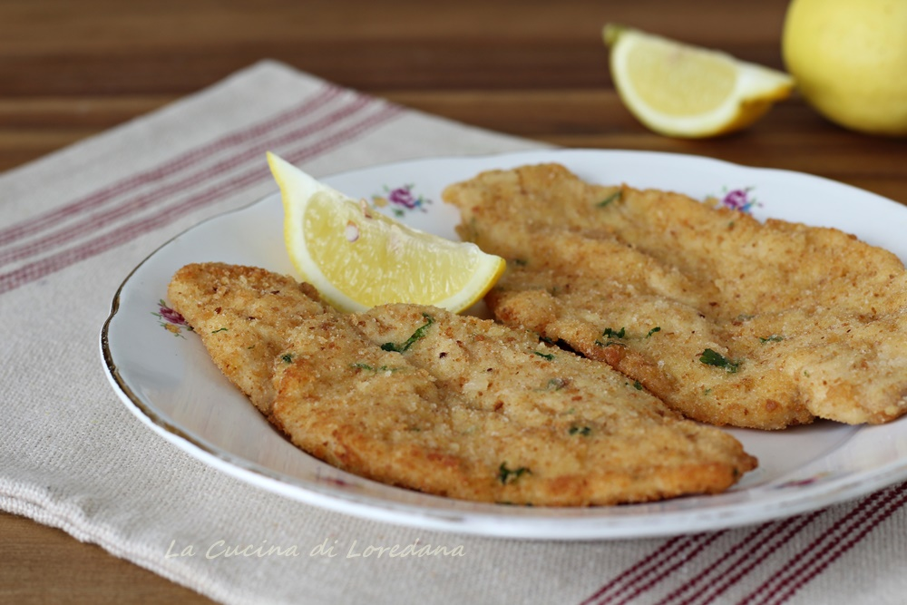

DESCRIZIONE
Quella che voglio raccontarvi oggi è una ricetta semplice e veloce per
trasformare delle semplici fette di petto di pollo in un secondo piatto
squisito: le Cotolette di petto di pollo. Croccanti e saporite, ma anche
tenerissime e pronte proprio in pochissimi minuti, conquisteranno
soprattutto i piccoli. Io le ho fritte, ma potete anche cuocerle in
padella e saranno ugualmente buonissime. Corriamo allora in cucina e
prepariamo insieme delle deliziose Cotolette di pollo
INGREDIENTI
- 400 g Petto di pollo (a fette)
- q.b. Farina
- 40 g Parmigiano reggiano (grattugiato)
- un pizzico Sale
- 2 Uova
- 150 g Pangrattato
- 1 ciuffo Prezzemolo
- q.b. Olio di semi (per la frittura)
PASSAGGI
-
Per preparare le Cotolette di pollo fatevi tagliare
delle fettine sottili dal vostro macellaio, o nel caso appiattitele
leggermente con un batticarne. Preparate l'impanatura: mescolate in un
piatto il pangrattato con il parmigiano grattugiato e il prezzemolo
tritato finemente.
-
Sbattete in una ciotola le uova con un pizzico di sale. Passate le fette
di petto di pollo dapprima nella farina, facendola aderire per bene da
tutte le parti. Poi nelle uova sbattute ed infine nel pangrattato.
-
Ora non vi resta che friggere le Cotolette di pollo in
abbondante olio di semi bollente, rigirandole dopo due minuti per
cuocerle bene da entrambi i lati. Lasciatele poi sgocciolare su fogli di
carta da cucina. Per una cottura più leggera, potete allinearle su una
teglia unta di olio e farle cuocere in forno a 180° per 10 minuti.
Ritorna su
Ritorna alla pagina principale